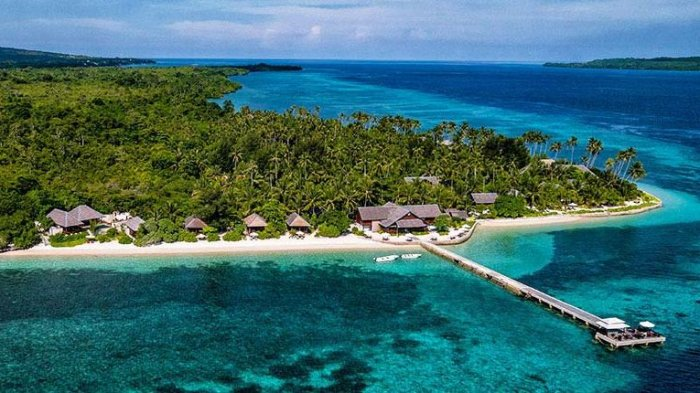

GAMBAR KEINDAHAN ALAM INDONESIA
1. Gunung Bromo
.jpg)
Gunung Bromo adalah gunung berapi aktif yang terletak di Jawa Timur, Indonesia, dan merupakan bagian dari Pegunungan Tengger. Gunung ini dikenal karena keindahan alamnya dan kemudahan jalur pendakiannya, menjadikannya sebagai salah satu objek wisata yang populer. Selain itu, Gunung Bromo juga memiliki makna budaya yang dalam, dianggap suci oleh Suku Tengger, dan menjadi lokasi ziarah Hindu. Dengan ketinggian sekitar 2.329 mdpl, Gunung Bromo menawarkan pemandangan yang menakjubkan dan pengalaman yang unik bagi para pengunjung. Wikipedia +4 Wikipedia Gunung Bromo - Wikipedia bahasa Indonesia, ensiklopedia bebas
2.Danau Toba

Keindahan alam Indonesia juga dapat kamu nikmati saat berkunjung ke Danau Toba yang terletak di wilayah Sumatera Utara. Danau Toba merupakan danau terbesar di Indonesia. Di tengah-tengah danau ini, ada sebuah daratan yang cukup luas yaitu Pulau Samosir. Kamu bisa berkunjung ke Pulau Samosir dengan menumpang kapal feri selama 30 menit. Di Pulau Samosir, kamu bisa mengeksplorasi sejarah dan kebudayaan masyarakat lokal.
3.Bunaken
Salah satu bukti keindahan alam Indonesia bisa kamu temukan di Bunaken. Taman Nasional Bunaken terletak di Sulawesi Utara, tepatnya di Segitiga Terumbu Karang. Di kawasan ini, ada sekitar 390 spesies terumbu karang serta berbagai jenis ikan dan hewan laut. Tak heran jika banyak wisatawan datang ke Taman Laut Bunaken demi bisa menyaksikan habitat bawah laut ini dari dekat.
4.Raja Ampat

Salah satu tempat menarik di Raja Ampat adalah Pianemo atau Painemu yang merupakan kawasan karst. Gugusan pulau karang ini tampak cantik membentang di laut sehingga sering dijuluki “surga kecil” di Tanah Papua. Ada juga yang disebut Laguna Bintang, yaitu laguna yang berbentuk seperti bintang dan memiliki air berwarna hijau toska. Laguna yang terbentuk secara alami ini bisa dinikmati secara utuh dari puncak bukit.
5.Wakatobi
Berada di Sulawesi Tenggara, Taman Nasional Wakatobi yang sebagian besar wilayahnya merupakan perairan ini merupakan destinasi wisata alam yang menawarkan keindahan alam Indonesia yang sangat menakjubkan. Kerap dijuluki sebagai surga bawah laut, destinasi wisata alam di Indonesia ini merupakan rumah bagi berbagai jenis flora dan fauna laut termasuk gugusan karang indah nan eksotis yang dikonservasi di sini. Mampir ke sini, sempatkan diri untuk diving atau snorkeling untuk lihat lebih dekat keindahan alam bawah laut Indonesia.